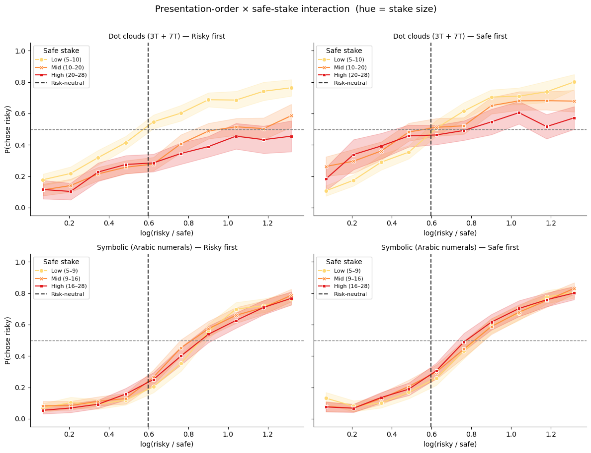
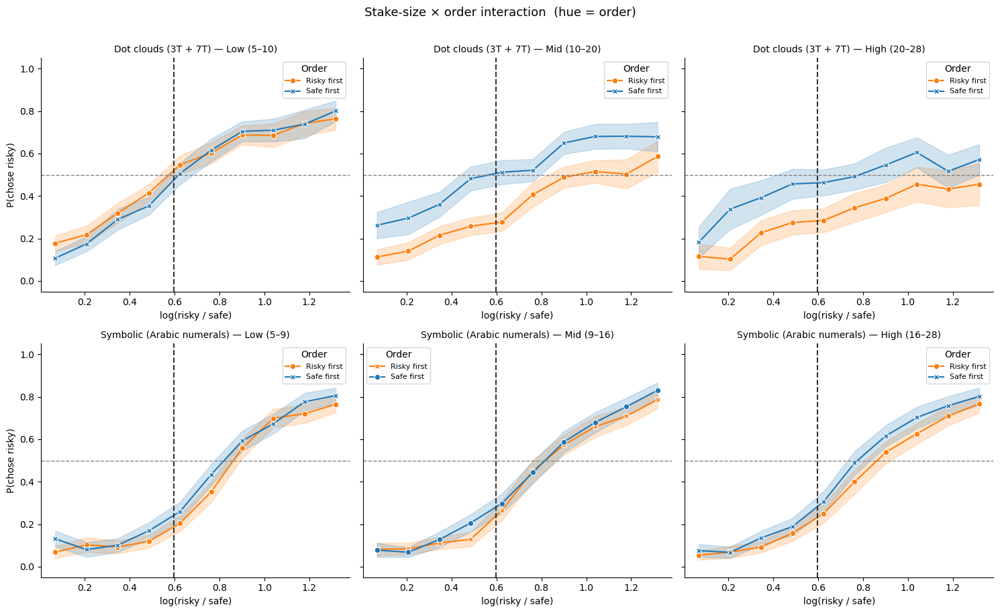
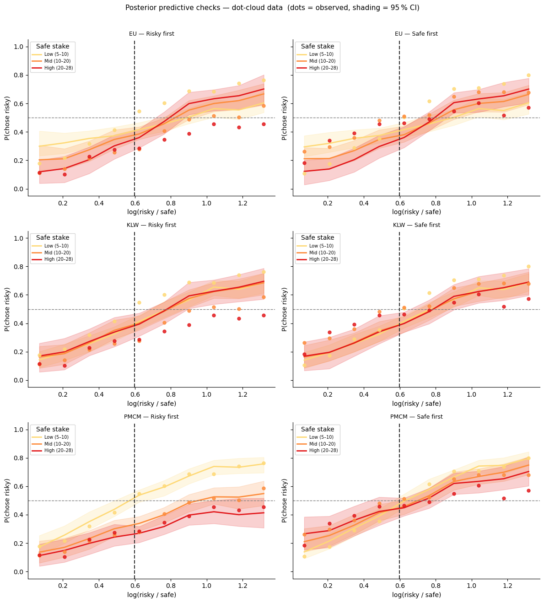
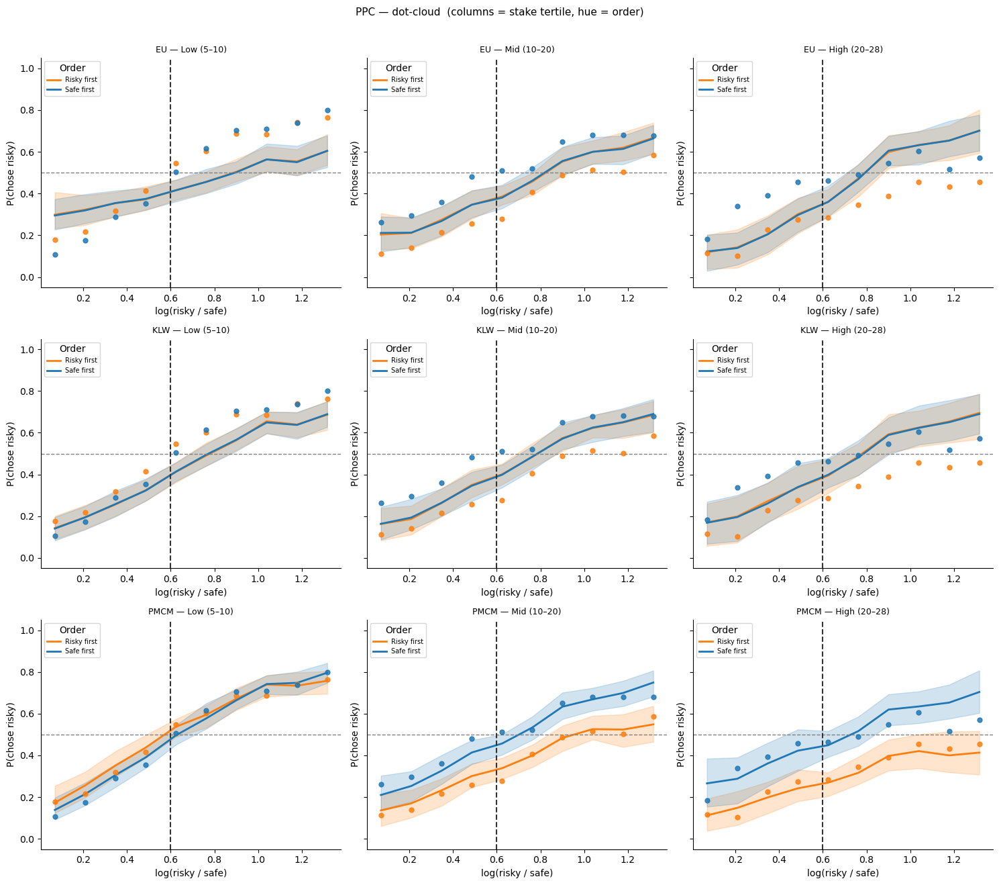
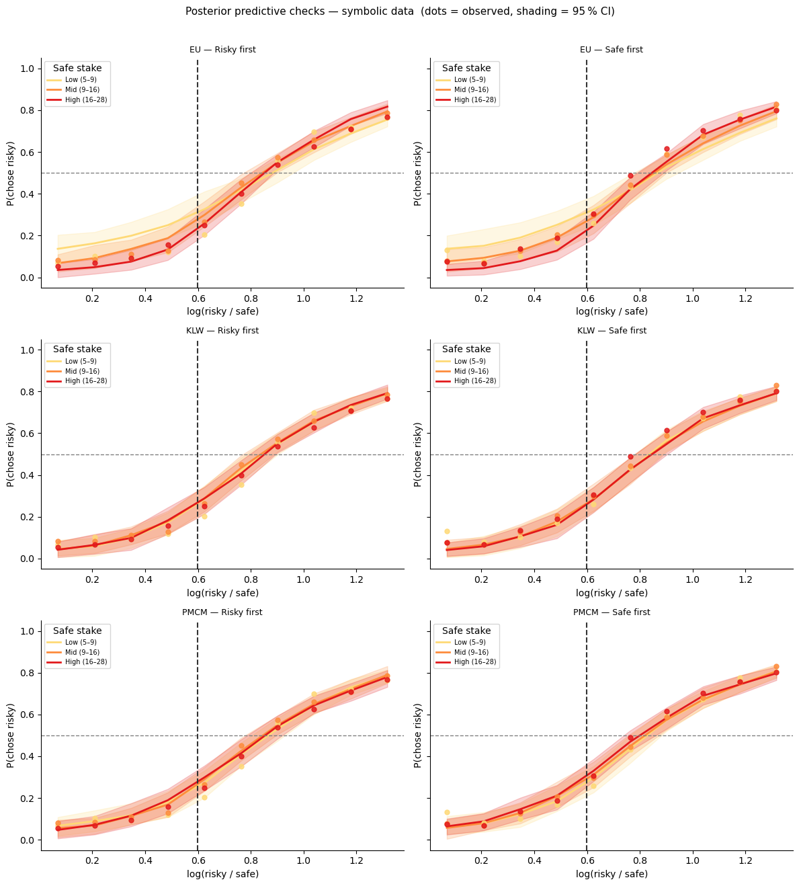
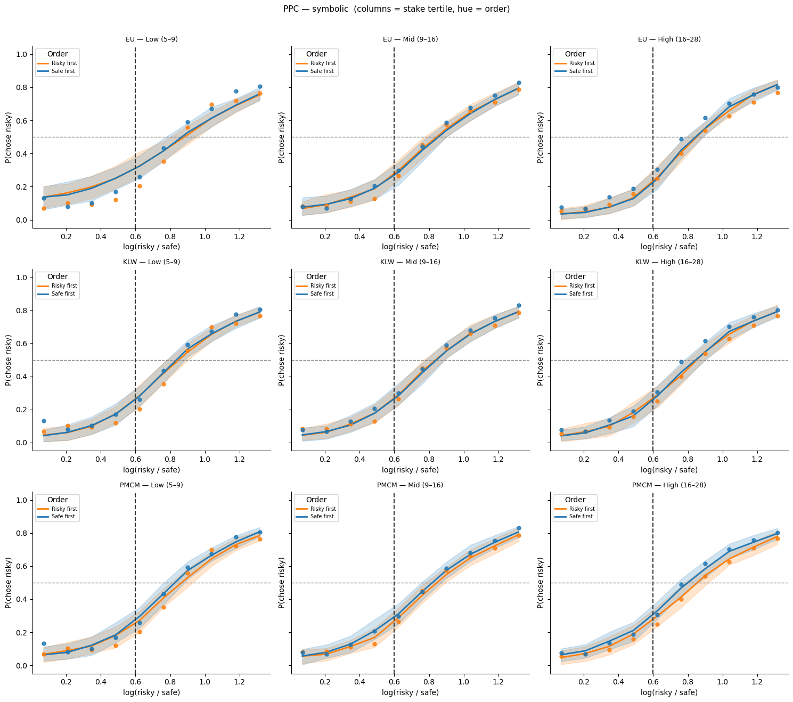
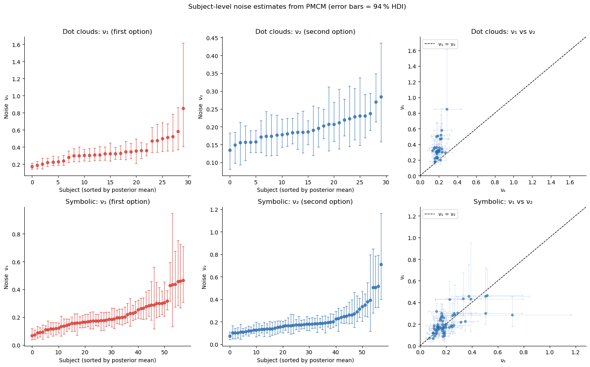
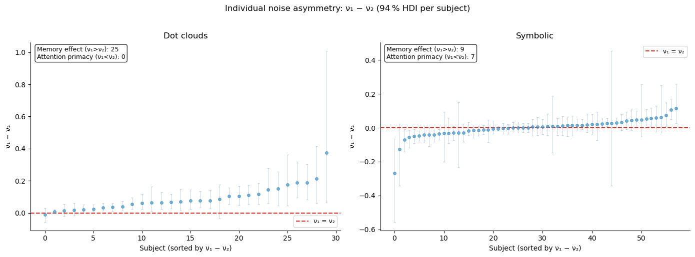
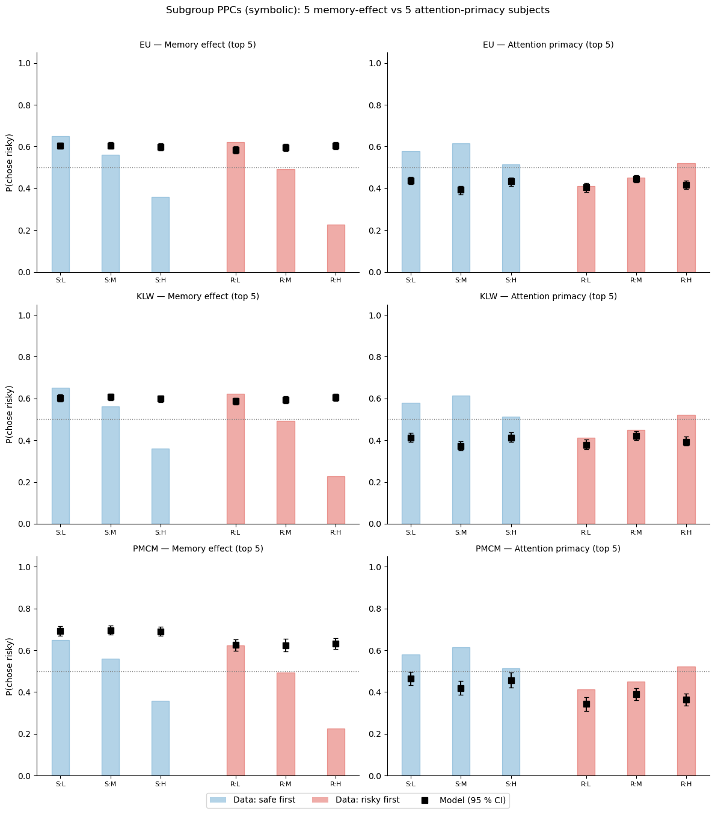
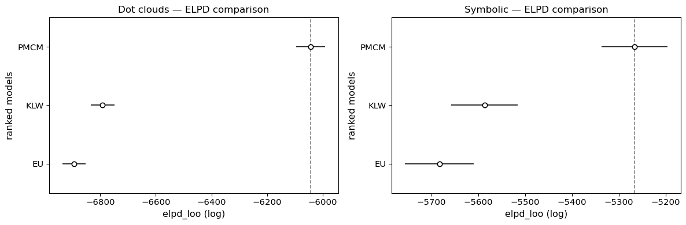

Lesson 3: Stake effects and presentation order — de Hollander et al. (2024, bioRxiv)¶
Background¶
De Hollander et al. (2024, Nature Human Behaviour) tested whether perceptual noise during the encoding of numerical magnitudes explains risk aversion and its interaction with presentation order. The key design feature: the order in which the safe and risky options are presented is randomised across trials, allowing the model to disentangle \(\nu_1\) (noise on the first-presented option) from \(\nu_2\) (noise on the second-presented option).
This produces a distinctive presentation-order × stake-size interaction: when the safe option comes first, high safe stakes are compressed downward more strongly by the prior → safe looks less attractive → the observer becomes more risk-seeking for high stakes. When the risky option comes first, the same mechanism operates on the risky stakes → risk aversion for high stakes.
Standard models (EU, KLW with a shared noise) cannot capture this asymmetry.
Models compared¶
Model |
Class |
Key parameters |
|---|---|---|
Expected Utility (EU) |
|
|
KLW |
|
|
PMCM |
|
|
We fit all three on both the dot-cloud (fMRI sessions 3T+7T) and the symbolic (Arabic numerals) datasets, then compare posterior predictives against the interaction pattern.
[1]:
import warnings; warnings.filterwarnings('ignore')
import numpy as np
import pandas as pd
import matplotlib.pyplot as plt
import seaborn as sns
import arviz as az
from bauer.utils.data import load_dehollander2024
from bauer.models import ExpectedUtilityRiskModel, RiskModel
# Load both fMRI sessions and combine
df_dot = load_dehollander2024(task='dotcloud', sessions=['3t2', '7t2'])
df_sym = load_dehollander2024(task='symbolic')
print(f"Dot clouds — subjects: {df_dot.index.get_level_values('subject').nunique()}, "
f"trials: {len(df_dot)}")
print(f"Symbolic — subjects: {df_sym.index.get_level_values('subject').nunique()}, "
f"trials: {len(df_sym)}")
df_dot.head()
Dot clouds — subjects: 30, trials: 11445
Symbolic — subjects: 58, trials: 14722
[1]:
| n1 | n2 | p1 | p2 | choice | risky_first | ||||
|---|---|---|---|---|---|---|---|---|---|
| subject | session | run | trial_nr | ||||||
| 02 | 3t2 | 1 | 1 | 5.0 | 5.0 | 0.55 | 1.0 | True | True |
| 2 | 7.0 | 7.0 | 0.55 | 1.0 | True | True | |||
| 3 | 37.0 | 20.0 | 0.55 | 1.0 | True | True | |||
| 4 | 47.0 | 20.0 | 0.55 | 1.0 | False | True | |||
| 5 | 18.0 | 10.0 | 0.55 | 1.0 | True | True |
[2]:
def prep_df(df):
"""Add log_ratio, chose_risky, n_safe, order flag, and binned columns.
Returns (df, stake_labels) where stake_labels lists the three stake-bin names
with concrete magnitude ranges, e.g. ['Low (5–12)', 'Mid (12–24)', 'High (24–48)'].
"""
df = df.reset_index()
risky_first = df['p1'] == 0.55
df['log_ratio'] = np.log(
np.where(risky_first, df['n1'], df['n2']) /
np.where(risky_first, df['n2'], df['n1']))
df['chose_risky'] = np.where(risky_first, ~df['choice'], df['choice'])
n_safe = np.where(risky_first, df['n2'], df['n1'])
df['n_safe'] = n_safe
df['risky_first'] = risky_first
df['order'] = np.where(risky_first, 'Risky first', 'Safe first')
df['log_ratio_bin'] = (pd.cut(df['log_ratio'], bins=10)
.map(lambda x: x.mid).astype(float))
_, bins = pd.qcut(n_safe, q=3, retbins=True, duplicates='drop')
stake_labels = [
f'Low ({bins[0]:.0f}–{bins[1]:.0f})',
f'Mid ({bins[1]:.0f}–{bins[2]:.0f})',
f'High ({bins[2]:.0f}–{bins[3]:.0f})',
]
df['n_safe_bin'] = pd.qcut(n_safe, q=3, labels=stake_labels, duplicates='drop')
return df, stake_labels
df_dot_p, dot_stake_labels = prep_df(df_dot)
df_sym_p, sym_stake_labels = prep_df(df_sym)
# Sequential (light→dark) palette for stake sizes — hue in existing order×stake plots
def make_stake_pal(labels):
cols = sns.color_palette('YlOrRd', len(labels)) # yellow → orange → red
return dict(zip(labels, cols))
dot_stake_pal = make_stake_pal(dot_stake_labels)
sym_stake_pal = make_stake_pal(sym_stake_labels)
# Order palette: standard seaborn blue/orange
order_pal = {'Safe first': sns.color_palette()[0], # blue
'Risky first': sns.color_palette()[1]} # orange
Presentation-order x stake-size interaction¶
Each panel shows P(chose risky) as a function of the log risky/safe magnitude ratio, split by safe-option stake tertile. The left column shows trials where the risky option came first; the right column shows trials where the safe option came first.
The dashed vertical line marks the risk-neutral indifference point log(1/0.55).
[3]:
def plot_interaction(df_p, axes_row, task_label, stake_labels, stake_pal):
"""Columns = order condition, hue = safe-stake tertile."""
for ax, order_val in zip(axes_row, ['Risky first', 'Safe first']):
sub = df_p[df_p['order'] == order_val]
subj = (sub.groupby(['subject', 'log_ratio_bin', 'n_safe_bin'])['chose_risky']
.mean().reset_index())
subj = subj[subj.groupby(['log_ratio_bin', 'n_safe_bin'])
['subject'].transform('count') >= 3]
sns.lineplot(data=subj, x='log_ratio_bin', y='chose_risky',
hue='n_safe_bin', style='n_safe_bin',
hue_order=stake_labels, style_order=stake_labels,
palette=stake_pal, markers=True, dashes=False,
errorbar='se', ax=ax)
ax.axhline(.5, ls='--', c='gray', lw=1)
ax.axvline(np.log(1/.55), ls='--', c='#333333', lw=1.5, label='Risk-neutral')
ax.set_ylim(-.05, 1.05)
ax.set_xlabel('log(risky / safe)')
ax.set_ylabel('P(chose risky)')
ax.set_title(f'{task_label} — {order_val}', fontsize=10)
ax.legend(title='Safe stake', fontsize=8)
sns.despine(ax=ax)
def plot_interaction_by_stake(df_p, axes_row, task_label, stake_labels):
"""Columns = safe-stake tertile, hue = order condition (orange/blue)."""
for ax, sbin in zip(axes_row, stake_labels):
sub = df_p[df_p['n_safe_bin'] == sbin]
subj = (sub.groupby(['subject', 'log_ratio_bin', 'order'])['chose_risky']
.mean().reset_index())
subj = subj[subj.groupby(['log_ratio_bin', 'order'])
['subject'].transform('count') >= 3]
sns.lineplot(data=subj, x='log_ratio_bin', y='chose_risky',
hue='order', style='order',
hue_order=['Risky first', 'Safe first'],
palette=order_pal, markers=True, dashes=False,
errorbar='se', ax=ax)
ax.axhline(.5, ls='--', c='gray', lw=1)
ax.axvline(np.log(1/.55), ls='--', c='#333333', lw=1.5)
ax.set_ylim(-.05, 1.05)
ax.set_xlabel('log(risky / safe)')
ax.set_ylabel('P(chose risky)')
ax.set_title(f'{task_label} — {sbin}', fontsize=10)
ax.legend(title='Order', fontsize=8)
sns.despine(ax=ax)
fig, axes = plt.subplots(2, 2, figsize=(12, 9), sharey=True)
plot_interaction(df_dot_p, axes[0], 'Dot clouds (3T + 7T)', dot_stake_labels, dot_stake_pal)
plot_interaction(df_sym_p, axes[1], 'Symbolic (Arabic numerals)', sym_stake_labels, sym_stake_pal)
plt.suptitle('Presentation-order × safe-stake interaction (hue = stake size)', fontsize=13, y=1.01)
plt.tight_layout()

Alternative view: stake size × order (hue = order)¶
The same data shown with columns = stake tertile and hue = presentation order. Orange = risky option presented first; blue = safe option presented first.
[4]:
fig, axes = plt.subplots(2, 3, figsize=(15, 9), sharey=True)
plot_interaction_by_stake(df_dot_p, axes[0], 'Dot clouds (3T + 7T)', dot_stake_labels)
plot_interaction_by_stake(df_sym_p, axes[1], 'Symbolic (Arabic numerals)', sym_stake_labels)
plt.suptitle('Stake-size × order interaction (hue = order)', fontsize=13, y=1.01)
plt.tight_layout()

Fit three models — dot-cloud data¶
Hierarchical MCMC, 100 draws / 100 tune / 2 chains. We store log-likelihoods (log_likelihood=True) for ELPD model comparison later.
[5]:
# ── 1. Expected Utility ──────────────────────────────────────────────────────
model_eu = ExpectedUtilityRiskModel(paradigm=df_dot)
model_eu.build_estimation_model(data=df_dot, hierarchical=True, save_p_choice=True)
idata_eu = model_eu.sample(draws=100, tune=100, chains=2, progressbar=False,
idata_kwargs={'log_likelihood': True})
Initializing NUTS using jitter+adapt_diag...
Multiprocess sampling (2 chains in 2 jobs)
NUTS: [alpha_mu_untransformed, alpha_sd, alpha_offset, sigma_mu_untransformed, sigma_sd, sigma_offset]
Sampling 2 chains for 100 tune and 100 draw iterations (200 + 200 draws total) took 65 seconds.
We recommend running at least 4 chains for robust computation of convergence diagnostics
The rhat statistic is larger than 1.01 for some parameters. This indicates problems during sampling. See https://arxiv.org/abs/1903.08008 for details
The effective sample size per chain is smaller than 100 for some parameters. A higher number is needed for reliable rhat and ess computation. See https://arxiv.org/abs/1903.08008 for details
[6]:
# ── 2. KLW (shared noise, shared prior) ─────────────────────────────────────
model_klw = RiskModel(paradigm=df_dot, prior_estimate='klw',
fit_seperate_evidence_sd=False)
model_klw.build_estimation_model(data=df_dot, hierarchical=True, save_p_choice=True)
idata_klw = model_klw.sample(draws=100, tune=100, chains=2, progressbar=False,
idata_kwargs={'log_likelihood': True})
Initializing NUTS using jitter+adapt_diag...
Multiprocess sampling (2 chains in 2 jobs)
NUTS: [evidence_sd_mu_untransformed, evidence_sd_sd, evidence_sd_offset, prior_sd_mu_untransformed, prior_sd_sd, prior_sd_offset]
Sampling 2 chains for 100 tune and 100 draw iterations (200 + 200 draws total) took 55 seconds.
We recommend running at least 4 chains for robust computation of convergence diagnostics
The rhat statistic is larger than 1.01 for some parameters. This indicates problems during sampling. See https://arxiv.org/abs/1903.08008 for details
The effective sample size per chain is smaller than 100 for some parameters. A higher number is needed for reliable rhat and ess computation. See https://arxiv.org/abs/1903.08008 for details
[7]:
# ── 3. PMCM (separate noise + separate priors) ────────────────────
model_full = RiskModel(paradigm=df_dot, prior_estimate='full',
fit_seperate_evidence_sd=True)
model_full.build_estimation_model(data=df_dot, hierarchical=True, save_p_choice=True)
idata_full = model_full.sample(draws=100, tune=100, chains=2, progressbar=False,
idata_kwargs={'log_likelihood': True})
Initializing NUTS using jitter+adapt_diag...
Multiprocess sampling (2 chains in 2 jobs)
NUTS: [n1_evidence_sd_mu_untransformed, n1_evidence_sd_sd, n1_evidence_sd_offset, n2_evidence_sd_mu_untransformed, n2_evidence_sd_sd, n2_evidence_sd_offset, risky_prior_mu_mu, risky_prior_mu_sd, risky_prior_mu_offset, risky_prior_sd_mu_untransformed, risky_prior_sd_sd, risky_prior_sd_offset, safe_prior_mu_mu, safe_prior_mu_sd, safe_prior_mu_offset, safe_prior_sd_mu_untransformed, safe_prior_sd_sd, safe_prior_sd_offset]
Sampling 2 chains for 100 tune and 100 draw iterations (200 + 200 draws total) took 80 seconds.
We recommend running at least 4 chains for robust computation of convergence diagnostics
The rhat statistic is larger than 1.01 for some parameters. This indicates problems during sampling. See https://arxiv.org/abs/1903.08008 for details
The effective sample size per chain is smaller than 100 for some parameters. A higher number is needed for reliable rhat and ess computation. See https://arxiv.org/abs/1903.08008 for details
Posterior predictives — dot-cloud data¶
Dots = observed group average; line + shading = model mean and 95 % posterior interval.
[8]:
from bauer.utils import summarize_ppc_group
def add_model_ppc(df_orig, df_prepped, model, idata, model_name, stake_labels):
"""Condition-level PPC via summarize_ppc_group (two-step subject averaging)."""
ppc_df = model.ppc(df_orig, idata, var_names=['ll_bernoulli'])
ppc_ll = ppc_df.xs('ll_bernoulli', level='variable')
sample_cols = ppc_ll.columns.tolist()
ppc_flat = ppc_ll.reset_index()
risky_first = (ppc_flat['p1'] == 0.55)
ppc_flat[sample_cols] = np.where(
risky_first.values[:, None],
1 - ppc_flat[sample_cols].values,
ppc_flat[sample_cols].values
)
ppc_flat['order'] = np.where(risky_first, 'Risky first', 'Safe first')
log_ratio = np.log(
np.where(risky_first, ppc_flat['n1'], ppc_flat['n2']) /
np.where(risky_first, ppc_flat['n2'], ppc_flat['n1']))
ppc_flat['log_ratio_bin'] = (pd.cut(pd.Series(log_ratio), bins=10)
.map(lambda x: x.mid).astype(float).values)
n_safe = np.where(risky_first, ppc_flat['n2'], ppc_flat['n1'])
ppc_flat['n_safe_bin'] = pd.qcut(n_safe, q=3, labels=stake_labels, duplicates='drop')
result = summarize_ppc_group(
ppc_flat,
condition_cols=['order', 'n_safe_bin', 'log_ratio_bin']
)
return result.rename(columns={'p_predicted': 'p_mean',
'hdi025': 'p_lo', 'hdi975': 'p_hi'}).reset_index()
def plot_ppc_interaction(df_pred, df_obs, model_name, axes_row, stake_labels, stake_pal):
"""Columns = order; hue = stake tertile (sequential palette)."""
for ax, order_val in zip(axes_row, ['Risky first', 'Safe first']):
pred = df_pred[df_pred['order'] == order_val]
obs = df_obs[df_obs['order'] == order_val]
for sbin in stake_labels:
p = pred[pred['n_safe_bin'] == sbin]
o = obs[obs['n_safe_bin'] == sbin]
if len(o) == 0:
continue
c = stake_pal[sbin]
ax.fill_between(p['log_ratio_bin'], p['p_lo'], p['p_hi'], color=c, alpha=.20)
ax.plot(p['log_ratio_bin'], p['p_mean'], color=c, lw=2, label=sbin)
ax.scatter(o['log_ratio_bin'], o['chose_risky'],
color=c, s=25, zorder=5, alpha=.85)
ax.axhline(.5, ls='--', c='gray', lw=1)
ax.axvline(np.log(1/.55), ls='--', c='#333333', lw=1.5)
ax.set_ylim(-.05, 1.05)
ax.set_title(f'{model_name} — {order_val}', fontsize=9)
ax.set_xlabel('log(risky / safe)'); ax.set_ylabel('P(chose risky)')
ax.legend(title='Safe stake', fontsize=7, loc='upper left')
sns.despine(ax=ax)
def plot_ppc_by_stake(df_pred, df_obs, model_name, axes_row, stake_labels):
"""Columns = stake tertile; hue = order (orange/blue)."""
for ax, sbin in zip(axes_row, stake_labels):
pred = df_pred[df_pred['n_safe_bin'] == sbin]
obs = df_obs[df_obs['n_safe_bin'] == sbin]
for order_val in ['Risky first', 'Safe first']:
p = pred[pred['order'] == order_val]
o = obs[obs['order'] == order_val]
if len(o) == 0:
continue
c = order_pal[order_val]
ax.fill_between(p['log_ratio_bin'], p['p_lo'], p['p_hi'], color=c, alpha=.20)
ax.plot(p['log_ratio_bin'], p['p_mean'], color=c, lw=2, label=order_val)
ax.scatter(o['log_ratio_bin'], o['chose_risky'],
color=c, s=25, zorder=5, alpha=.85)
ax.axhline(.5, ls='--', c='gray', lw=1)
ax.axvline(np.log(1/.55), ls='--', c='#333333', lw=1.5)
ax.set_ylim(-.05, 1.05)
ax.set_title(f'{model_name} — {sbin}', fontsize=9)
ax.set_xlabel('log(risky / safe)'); ax.set_ylabel('P(chose risky)')
ax.legend(title='Order', fontsize=7, loc='upper left')
sns.despine(ax=ax)
# Observed: two-step average matching the PPC computation
obs_dot = (df_dot_p
.groupby(['subject', 'order', 'n_safe_bin', 'log_ratio_bin'])['chose_risky']
.mean()
.groupby(['order', 'n_safe_bin', 'log_ratio_bin']).mean()
.reset_index())
fig, axes = plt.subplots(3, 2, figsize=(12, 13), sharey=True)
ppc_dot = {}
for (mdl, idat, name), row in zip(
[(model_eu, idata_eu, 'EU'),
(model_klw, idata_klw, 'KLW'),
(model_full, idata_full, 'PMCM')],
axes):
ppc_dot[name] = add_model_ppc(df_dot, df_dot_p, mdl, idat, name, dot_stake_labels)
plot_ppc_interaction(ppc_dot[name], obs_dot, name, row, dot_stake_labels, dot_stake_pal)
plt.suptitle('Posterior predictive checks — dot-cloud data (dots = observed, shading = 95 % CI)',
fontsize=11, y=1.01)
plt.tight_layout()
Sampling: [ll_bernoulli]
Sampling: [ll_bernoulli]
Sampling: [ll_bernoulli]

Alternative PPC view: columns = stake size, hue = order¶
[9]:
fig, axes = plt.subplots(3, 3, figsize=(15, 13), sharey=True)
for (name, df_pred), row in zip(ppc_dot.items(), axes):
plot_ppc_by_stake(df_pred, obs_dot, name, row, dot_stake_labels)
plt.suptitle('PPC — dot-cloud (columns = stake tertile, hue = order)',
fontsize=11, y=1.01)
plt.tight_layout()

Fit three models — symbolic data¶
[10]:
# ── 1. EU ────────────────────────────────────────────────────────────────────
model_eu_sym = ExpectedUtilityRiskModel(paradigm=df_sym)
model_eu_sym.build_estimation_model(data=df_sym, hierarchical=True, save_p_choice=True)
idata_eu_sym = model_eu_sym.sample(draws=100, tune=100, chains=2, progressbar=False,
idata_kwargs={'log_likelihood': True})
Initializing NUTS using jitter+adapt_diag...
Multiprocess sampling (2 chains in 2 jobs)
NUTS: [alpha_mu_untransformed, alpha_sd, alpha_offset, sigma_mu_untransformed, sigma_sd, sigma_offset]
Sampling 2 chains for 100 tune and 100 draw iterations (200 + 200 draws total) took 108 seconds.
We recommend running at least 4 chains for robust computation of convergence diagnostics
The rhat statistic is larger than 1.01 for some parameters. This indicates problems during sampling. See https://arxiv.org/abs/1903.08008 for details
The effective sample size per chain is smaller than 100 for some parameters. A higher number is needed for reliable rhat and ess computation. See https://arxiv.org/abs/1903.08008 for details
[11]:
# ── 2. KLW ───────────────────────────────────────────────────────────────────
model_klw_sym = RiskModel(paradigm=df_sym, prior_estimate='klw',
fit_seperate_evidence_sd=False)
model_klw_sym.build_estimation_model(data=df_sym, hierarchical=True, save_p_choice=True)
idata_klw_sym = model_klw_sym.sample(draws=100, tune=100, chains=2, progressbar=False,
idata_kwargs={'log_likelihood': True})
Initializing NUTS using jitter+adapt_diag...
Multiprocess sampling (2 chains in 2 jobs)
NUTS: [evidence_sd_mu_untransformed, evidence_sd_sd, evidence_sd_offset, prior_sd_mu_untransformed, prior_sd_sd, prior_sd_offset]
Sampling 2 chains for 100 tune and 100 draw iterations (200 + 200 draws total) took 115 seconds.
We recommend running at least 4 chains for robust computation of convergence diagnostics
The rhat statistic is larger than 1.01 for some parameters. This indicates problems during sampling. See https://arxiv.org/abs/1903.08008 for details
The effective sample size per chain is smaller than 100 for some parameters. A higher number is needed for reliable rhat and ess computation. See https://arxiv.org/abs/1903.08008 for details
[12]:
# ── 3. PMCM ────────────────────────────────────────────────────────
model_full_sym = RiskModel(paradigm=df_sym, prior_estimate='full',
fit_seperate_evidence_sd=True)
model_full_sym.build_estimation_model(data=df_sym, hierarchical=True, save_p_choice=True)
idata_full_sym = model_full_sym.sample(draws=100, tune=100, chains=2, progressbar=False,
idata_kwargs={'log_likelihood': True})
Initializing NUTS using jitter+adapt_diag...
Multiprocess sampling (2 chains in 2 jobs)
NUTS: [n1_evidence_sd_mu_untransformed, n1_evidence_sd_sd, n1_evidence_sd_offset, n2_evidence_sd_mu_untransformed, n2_evidence_sd_sd, n2_evidence_sd_offset, risky_prior_mu_mu, risky_prior_mu_sd, risky_prior_mu_offset, risky_prior_sd_mu_untransformed, risky_prior_sd_sd, risky_prior_sd_offset, safe_prior_mu_mu, safe_prior_mu_sd, safe_prior_mu_offset, safe_prior_sd_mu_untransformed, safe_prior_sd_sd, safe_prior_sd_offset]
Sampling 2 chains for 100 tune and 100 draw iterations (200 + 200 draws total) took 132 seconds.
We recommend running at least 4 chains for robust computation of convergence diagnostics
The rhat statistic is larger than 1.01 for some parameters. This indicates problems during sampling. See https://arxiv.org/abs/1903.08008 for details
The effective sample size per chain is smaller than 100 for some parameters. A higher number is needed for reliable rhat and ess computation. See https://arxiv.org/abs/1903.08008 for details
Posterior predictives — symbolic data¶
[13]:
obs_sym = (df_sym_p
.groupby(['subject', 'order', 'n_safe_bin', 'log_ratio_bin'])['chose_risky']
.mean()
.groupby(['order', 'n_safe_bin', 'log_ratio_bin']).mean()
.reset_index())
fig, axes = plt.subplots(3, 2, figsize=(12, 13), sharey=True)
ppc_sym = {}
for (mdl, idat, name), row in zip(
[(model_eu_sym, idata_eu_sym, 'EU'),
(model_klw_sym, idata_klw_sym, 'KLW'),
(model_full_sym, idata_full_sym, 'PMCM')],
axes):
ppc_sym[name] = add_model_ppc(df_sym, df_sym_p, mdl, idat, name, sym_stake_labels)
plot_ppc_interaction(ppc_sym[name], obs_sym, name, row, sym_stake_labels, sym_stake_pal)
plt.suptitle('Posterior predictive checks — symbolic data (dots = observed, shading = 95 % CI)',
fontsize=11, y=1.01)
plt.tight_layout()
Sampling: [ll_bernoulli]
Sampling: [ll_bernoulli]
Sampling: [ll_bernoulli]

Alternative PPC view: columns = stake size, hue = order (symbolic)¶
[14]:
fig, axes = plt.subplots(3, 3, figsize=(15, 13), sharey=True)
for (name, df_pred), row in zip(ppc_sym.items(), axes):
plot_ppc_by_stake(df_pred, obs_sym, name, row, sym_stake_labels)
plt.suptitle('PPC — symbolic (columns = stake tertile, hue = order)',
fontsize=11, y=1.01)
plt.tight_layout()

Parameter interpretation: \(\nu_1\) vs \(\nu_2\)¶
bauer’s get_subject_posterior_df creates a tidy summary DataFrame, and plot_subjectwise_pointplot maps it onto a FacetGrid — one panel per parameter per task.
[15]:
from bauer.utils import get_subject_posterior_df, plot_subjectwise_pointplot
fig, axes = plt.subplots(2, 3, figsize=(15, 9))
for row_axes, (idat, task_label) in zip(axes,
[(idata_full, 'Dot clouds'),
(idata_full_sym, 'Symbolic')]):
df_post = get_subject_posterior_df(idat, ['n1_evidence_sd', 'n2_evidence_sd'])
# Left: ν₁ sorted pointplot (direct call with ax=)
d1 = df_post[df_post['parameter'] == 'n1_evidence_sd'].reset_index(drop=True)
plot_subjectwise_pointplot(d1, color='#d73027', ax=row_axes[0])
row_axes[0].set_title(f'{task_label}: ν₁ (first option)')
row_axes[0].set_ylabel('Noise ν₁')
# Middle: ν₂ sorted pointplot
d2 = df_post[df_post['parameter'] == 'n2_evidence_sd'].reset_index(drop=True)
plot_subjectwise_pointplot(d2, color='#2166ac', ax=row_axes[1])
row_axes[1].set_title(f'{task_label}: ν₂ (second option)')
row_axes[1].set_ylabel('Noise ν₂')
# Right: ν₁ vs ν₂ scatter
n_subj = idat.posterior['n1_evidence_sd'].shape[-1]
s1 = idat.posterior['n1_evidence_sd'].values.reshape(-1, n_subj)
s2 = idat.posterior['n2_evidence_sd'].values.reshape(-1, n_subj)
nu1_mean, nu2_mean = s1.mean(0), s2.mean(0)
nu1_lo, nu1_hi = np.percentile(s1, [3, 97], axis=0)
nu2_lo, nu2_hi = np.percentile(s2, [3, 97], axis=0)
lim = max(nu1_hi.max(), nu2_hi.max()) * 1.1
row_axes[2].errorbar(nu2_mean, nu1_mean,
xerr=[nu2_mean - nu2_lo, nu2_hi - nu2_mean],
yerr=[nu1_mean - nu1_lo, nu1_hi - nu1_mean],
fmt='o', ms=4, alpha=.6, elinewidth=0.6, capsize=2,
color='#2166ac', ecolor='#aec7e8', zorder=3)
row_axes[2].plot([0, lim], [0, lim], 'k--', lw=1, label='ν₁ = ν₂')
row_axes[2].set_xlim(0, lim); row_axes[2].set_ylim(0, lim)
row_axes[2].set_xlabel('ν₂'); row_axes[2].set_ylabel('ν₁')
row_axes[2].set_title(f'{task_label}: ν₁ vs ν₂')
row_axes[2].legend(fontsize=9); sns.despine(ax=row_axes[2])
plt.suptitle('Subject-level noise estimates from PMCM (error bars = 94 % HDI)',
fontsize=12, y=1.02)
plt.tight_layout()

Individual differences in noise asymmetry¶
The group average \(\nu_1 > \nu_2\) suggests a memory effect: the first-presented option is noisier because it must be held in working memory. But this is only part of the story.
In the symbolic task, the picture is more nuanced. Not every participant shows a memory effect — some appear to show an attentional primacy effect where they focus more on the first option (\(\nu_1 < \nu_2\)). The distribution of \(\nu_1 - \nu_2\) across participants reveals this heterogeneity.
[16]:
# ── ν₁ − ν₂ difference per subject ──────────────────────────────────────────
from bauer.utils.math import softplus_np
fig, axes = plt.subplots(1, 2, figsize=(14, 5))
for ax, (idat, task_label) in zip(axes,
[(idata_full, 'Dot clouds'), (idata_full_sym, 'Symbolic')]):
n_subj = idat.posterior['n1_evidence_sd'].shape[-1]
s1 = softplus_np(idat.posterior['n1_evidence_sd'].values.reshape(-1, n_subj))
s2 = softplus_np(idat.posterior['n2_evidence_sd'].values.reshape(-1, n_subj))
diff = s1 - s2 # positive = memory effect (ν₁ > ν₂)
diff_mean = diff.mean(0)
diff_lo = np.percentile(diff, 3, 0)
diff_hi = np.percentile(diff, 97, 0)
sort_idx = np.argsort(diff_mean)
x = np.arange(n_subj)
ax.errorbar(x, diff_mean[sort_idx],
yerr=[diff_mean[sort_idx] - diff_lo[sort_idx],
diff_hi[sort_idx] - diff_mean[sort_idx]],
fmt='o', ms=4, elinewidth=0.7, capsize=1.5, alpha=.7,
color='#4393c3', ecolor='#aec7e8')
ax.axhline(0, ls='--', c='#d73027', lw=1.5, label='ν₁ = ν₂')
ax.set_xlabel('Subject (sorted by ν₁ − ν₂)')
ax.set_ylabel('ν₁ − ν₂')
ax.set_title(f'{task_label}')
n_mem = (diff_lo[sort_idx] > 0).sum()
n_att = (diff_hi[sort_idx] < 0).sum()
ax.text(0.02, 0.98, f'Memory effect (ν₁>ν₂): {n_mem}\nAttention primacy (ν₁<ν₂): {n_att}',
transform=ax.transAxes, va='top', fontsize=9,
bbox=dict(boxstyle='round', fc='white', alpha=.8))
ax.legend(fontsize=9); sns.despine(ax=ax)
plt.suptitle('Individual noise asymmetry: ν₁ − ν₂ (94 % HDI per subject)',
fontsize=12, y=1.02)
plt.tight_layout()

Interpreting the heterogeneity¶
For dot clouds, most participants show \(\nu_1 > \nu_2\) (memory effect) — consistent with the sequential presentation degrading the first option in working memory.
For symbolic (Arabic numeral) stimuli, the pattern is more mixed:
Some participants still show a memory effect (\(\nu_1 > \nu_2\))
Others show the opposite: \(\nu_1 < \nu_2\) — as if they allocate more attention to the first-presented option and less to the second
This suggests that with symbolic stimuli (which are faster to encode than dot clouds), the bottleneck shifts from working memory to attentional allocation, and different participants adopt different strategies.
Subject-level PPCs: do the models capture individual strategies?¶
Group-level PPCs can look fine while hiding poor fits for individual participants. We pick three subjects — one with a strong memory effect (\(\nu_1 \gg \nu_2\)), one balanced, and one with an attentional-primacy effect (\(\nu_1 < \nu_2\)) — and show their individual posterior predictives under the three models.
[17]:
# Identify 5 most extreme subjects in each direction (symbolic task)
from bauer.utils.math import softplus_np
n_subj_sym = idata_full_sym.posterior['n1_evidence_sd'].shape[-1]
s1_sym = softplus_np(idata_full_sym.posterior['n1_evidence_sd'].values.reshape(-1, n_subj_sym))
s2_sym = softplus_np(idata_full_sym.posterior['n2_evidence_sd'].values.reshape(-1, n_subj_sym))
diff_sym = (s1_sym - s2_sym).mean(0)
sym_subjects = idata_full_sym.posterior['n1_evidence_sd'].coords['subject'].values
rank = np.argsort(diff_sym)
top5_memory = sym_subjects[rank[-5:]] # highest ν₁ - ν₂
top5_attention = sym_subjects[rank[:5]] # lowest ν₁ - ν₂
print(f"Memory-effect subjects: {top5_memory} (mean Δν = {diff_sym[rank[-5:]].mean():.3f})")
print(f"Attention-primacy subjects: {top5_attention} (mean Δν = {diff_sym[rank[:5]].mean():.3f})")
Memory-effect subjects: ['13' '58' '129' '52' '139'] (mean Δν = 0.084)
Attention-primacy subjects: ['93' '87' '127' '90' '106'] (mean Δν = -0.113)
[18]:
# Subject-group PPCs using model probability (p), not binary ll_bernoulli
# Average P(chose risky) over 5 extreme subjects per group
def subgroup_ppc(model, idata, df_raw, df_prepped, subject_ids, group_label):
# Get model-predicted P(chose option 2) for all subjects
ppc_df = model.ppc(df_raw, idata, var_names=['p'])
ppc_p = ppc_df.xs('p', level='variable')
sample_cols = ppc_p.columns.tolist()
rows = []
for subj in subject_ids:
ppc_subj = ppc_p.xs(subj, level='subject').reset_index()
obs_subj = df_raw.xs(subj, level='subject').reset_index()
risky_first = ppc_subj['p1'] == 0.55
# P(chose risky): flip when risky is option 1
pred_risky = ppc_subj[sample_cols].values.copy()
pred_risky[risky_first] = 1 - pred_risky[risky_first]
obs_choice = obs_subj['choice'].values.astype(float)
obs_risky = np.where(risky_first, 1 - obs_choice, obs_choice)
order = np.where(risky_first, 'Risky first', 'Safe first')
n_safe = np.where(risky_first, obs_subj['n2'], obs_subj['n1'])
n_safe_bin = np.array(pd.qcut(n_safe, q=3, labels=['Low', 'Mid', 'High']))
for trial_i in range(len(obs_subj)):
rows.append({
'subject': subj, 'order': order[trial_i],
'n_safe_bin': str(n_safe_bin[trial_i]),
'obs': obs_risky[trial_i],
**{s: pred_risky[trial_i, j] for j, s in enumerate(sample_cols)},
})
df_all = pd.DataFrame(rows)
# Average over subjects within group, then by order x stake
grouped = df_all.groupby(['order', 'n_safe_bin'])
obs_mean = grouped['obs'].mean()
pred_vals = grouped[sample_cols].mean() # mean over subjects+trials per sample
pred_mean = pred_vals.mean(1)
pred_lo = pred_vals.quantile(0.025, axis=1)
pred_hi = pred_vals.quantile(0.975, axis=1)
return obs_mean, pred_mean, pred_lo, pred_hi
fig, axes = plt.subplots(3, 2, figsize=(12, 13))
groups = [
('Memory effect (top 5)', top5_memory),
('Attention primacy (top 5)', top5_attention),
]
model_list = [
(model_eu_sym, idata_eu_sym, 'EU'),
(model_klw_sym, idata_klw_sym, 'KLW'),
(model_full_sym, idata_full_sym, 'PMCM'),
]
order_colors = {'Safe first': '#4393c3', 'Risky first': '#d73027'}
for col, (group_label, subj_ids) in enumerate(groups):
for row, (model, idat, model_name) in enumerate(model_list):
ax = axes[row, col]
obs, pred, pred_lo, pred_hi = subgroup_ppc(
model, idat, df_sym, df_sym_p, subj_ids, group_label)
pos = 0
x_pos, x_labels = [], []
for order in ['Safe first', 'Risky first']:
for stake in ['Low', 'Mid', 'High']:
if (order, stake) not in obs.index:
continue
x_pos.append(pos)
x_labels.append(f'{order[0]}:{stake[0]}')
c = order_colors[order]
ax.bar(pos, obs.loc[(order, stake)], width=0.35,
color=c, alpha=0.4, edgecolor=c)
ax.errorbar(pos, pred.loc[(order, stake)],
yerr=[[pred.loc[(order, stake)] - pred_lo.loc[(order, stake)]],
[pred_hi.loc[(order, stake)] - pred.loc[(order, stake)]]],
fmt='s', ms=7, color='black', elinewidth=1.5, capsize=3, zorder=5)
pos += 1
pos += 0.5
ax.set_xticks(x_pos)
ax.set_xticklabels(x_labels, fontsize=8)
ax.set_ylim(0, 1.05)
ax.axhline(0.5, ls=':', c='gray', lw=1)
if col == 0: ax.set_ylabel('P(chose risky)')
ax.set_title(f'{model_name} — {group_label}', fontsize=10)
sns.despine(ax=ax)
from matplotlib.patches import Patch
from matplotlib.lines import Line2D
legend_elements = [
Patch(facecolor='#4393c3', alpha=0.4, label='Data: safe first'),
Patch(facecolor='#d73027', alpha=0.4, label='Data: risky first'),
Line2D([0], [0], marker='s', color='black', lw=0, ms=7, label='Model (95 % CI)'),
]
fig.legend(handles=legend_elements, loc='lower center', ncol=3, fontsize=10,
bbox_to_anchor=(0.5, -0.02))
plt.suptitle('Subgroup PPCs (symbolic): 5 memory-effect vs 5 attention-primacy subjects',
fontsize=12, y=1.01)
plt.tight_layout()
Sampling: []
Sampling: []
Sampling: []
Sampling: []
Sampling: []
Sampling: []

ELPD model comparison¶
ELPD (via PSIS-LOO) formally ranks the three models. Since we stored log-likelihoods during sampling, az.compare works directly.
[19]:
import arviz as az
print("=== Dot clouds ===")
compare_dot = az.compare({'EU': idata_eu, 'KLW': idata_klw, 'PMCM': idata_full})
print(compare_dot[['elpd_loo', 'p_loo', 'elpd_diff', 'dse', 'warning']].to_string())
print("\n=== Symbolic ===")
compare_sym = az.compare({'EU': idata_eu_sym, 'KLW': idata_klw_sym, 'PMCM': idata_full_sym})
print(compare_sym[['elpd_loo', 'p_loo', 'elpd_diff', 'dse', 'warning']].to_string())
=== Dot clouds ===
elpd_loo p_loo elpd_diff dse warning
PMCM -6042.782557 128.823215 0.000000 0.000000 True
KLW -6791.725179 44.728476 748.942622 35.723550 False
EU -6894.703778 58.247178 851.921221 37.140894 True
=== Symbolic ===
elpd_loo p_loo elpd_diff dse warning
PMCM -5266.338131 249.393476 0.000000 0.000000 True
KLW -5586.569619 121.725592 320.231488 26.070628 True
EU -5682.690820 149.078932 416.352690 36.002629 True
[20]:
fig, axes = plt.subplots(1, 2, figsize=(12, 4))
az.plot_compare(compare_dot, ax=axes[0])
axes[0].set_title('Dot clouds — ELPD comparison')
az.plot_compare(compare_sym, ax=axes[1])
axes[1].set_title('Symbolic — ELPD comparison')
plt.tight_layout()

Summary¶
Presentation order creates asymmetric noise (\(\nu_1 \neq \nu_2\)), but the direction and magnitude of the asymmetry varies across participants.
For dot clouds: most participants show a memory effect (\(\nu_1 > \nu_2\)). The PMCM captures the resulting order × stake-size interaction that EU and KLW cannot.
For symbolic stimuli: the pattern is more heterogeneous. Some participants show memory effects, others show attentional primacy (\(\nu_1 < \nu_2\)) — as if they attend more to the first option when the encoding bottleneck is less severe.
Individual PPCs reveal whether the group-level fit hides poor individual fits — PMCM’s separate \(\nu_1, \nu_2\) can accommodate both strategies, while KLW and EU cannot.
ELPD comparison formally ranks the models: PMCM should dominate for dot clouds where the order effect is strong.
In Lesson 4 we go one step further: instead of assuming a fixed log-space noise, we let the noise curve \(\nu(n)\) vary freely across magnitudes using B-splines — and test whether Weber’s law holds statistically via ELPD model comparison.